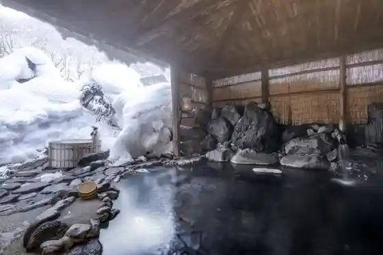
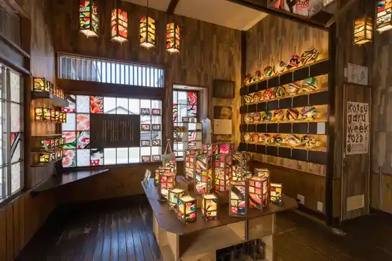
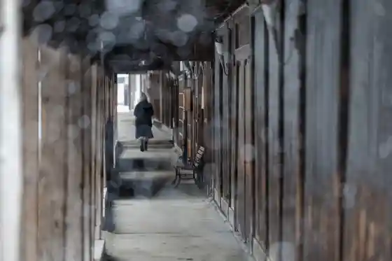
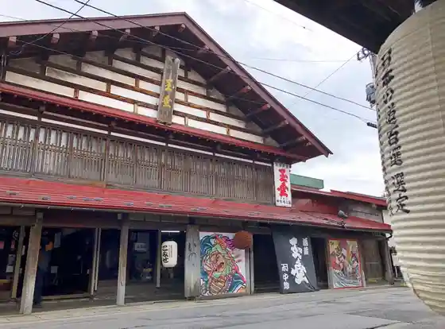

Nakano Momiji Yama
Kuroishi, Aomori · 0172-52-2111 · Official / source link
Ranpu no Yado Aoni Onsen
Kuroishi, Aomori · 0172-54-8588 · Official / source link

Tezukuri Zakka Taiken Workshop IRODORI
Kuroishi, Aomori · 0172-55-6188 · Official / source link

Naka Town Komise Tori
Kuroishi, Aomori · 0172-52-3488 · Official / source link

Kuroishi Komise Festival
Kuroishi, Aomori · 0172-52-4316 · Official / source link

Onto Onsen
Kuroishi, Aomori · 0172-52-3488 · Official / source link
Tsugaru Densho Kogei Kan
Kuroishi, Aomori · 0172-59-5300 · Official / source link
Kikunoi (Narumi Jozo Mise)
Kuroishi, Aomori · 0172-52-3321 · Official / source link
Kuroishi Kanko Ringo Sono
Kuroishi, Aomori · 0172-52-8898 · Official / source link
Roadside Station Niji no Mizumi
Kuroishi, Aomori · 0172-54-2348 · Official / source link
Tsugaru Kokeshi Kan
Kuroishi, Aomori · 0172-54-8181 · Official / source link
Kuroishi Shrine
Kuroishi, Aomori · 0172-52-2798 · Official / source link
Ita Ryu Onsen
Kuroishi, Aomori · 0172-52-3488 · Official / source link
Kuroishi Tourist Information
Kuroishi, Aomori · 0172-88-8815 · Official / source link
Juyo Bunkazai Takahashi Ie House
Kuroishi, Aomori · 0172-52-3488 · Official / source link
Tsugaru Hana Yomi no Yado Hana Zen no Sho
Kuroishi, Aomori · 0172-54-8226 · Official / source link
Yoko Town Noryo Yomise Festival
Kuroishi, Aomori · 0172-53-6030 · Official / source link
Zenkoku Dento Kokeshi Kojin Festival
Kuroishi, Aomori · 0172-54-8181 · Official / source link
Kurashikkuka Club Aomori Miiteingu in Komise
Kuroishi, Aomori · 0172-53-6030 · Official / source link
Niji no Mizumi ROCK FESTIVAL
Kuroishi, Aomori · 080-2118-0507 · Official / source link
Zennihon Zuguri Mawashi Senshukentaikai
Kuroishi, Aomori · 0172-52-4316 · Official / source link
Ringo Kenkyusho
Kuroishi, Aomori · 0172-52-2331 · Official / source link
Kodenten Te Shigoto Ato Ten
Kuroishi, Aomori · 0172-53-0905 · Official / source link
Tsugaru Kuroishiminna no Yuki Daruma
Kuroishi, Aomori · 0172-52-4316 · Official / source link
Kuroishi Sports Park
Kuroishi, Aomori · 0172-53-3378 · Official / source link
Dai 46 Kai Kuroishi Ryokka Festival
Kuroishi, Aomori · 0172-52-2111 · Official / source link
Okawara Hi Nagashi
Kuroishi, Aomori · 0172-52-3488 · Official / source link
Kanehira Sei Sono (Sawa Sei Sono)
Kuroishi, Aomori · 0172-52-2111 · Official / source link
Onto Onsen Ushi Yu Festival
Kuroishi, Aomori · 0172-52-3488 · Official / source link
Tsugaru Komise Eki
Kuroishi, Aomori · 0172-59-2080 · Official / source link
Tsugaru Kokeshi Kan Hatsu Hiki
Kuroishi, Aomori · 0172-54-8181 · Official / source link
Okawara Onsen Fukuju Kusa
Kuroishi, Aomori · 0172-54-2249 · Official / source link
Katakuri no Komichi
Kuroishi, Aomori · 0172-54-2405 · Official / source link
Tsugaru Jonkara Fushi Hassho no Chi
Kuroishi, Aomori · 0172-52-3488 · Official / source link
Ochiai Onsen Kyodo Bath
Kuroishi, Aomori · 0172-52-3488 · Official / source link
Asase Ishikawa Dam
Kuroishi, Aomori · 0172-54-8782 · Official / source link
Asase Ishikawa Toro Nagashi
Kuroishi, Aomori · 0172-52-3353 · Official / source link
Norin Sogokenkyusho Sankan De
Kuroishi, Aomori · 0172-52-4346 · Official / source link
Akita Ujaku Memorial Museum
Kuroishi, Aomori · 0172-59-2080 · Official / source link
Asase Ishikawa Damu Museum
Kuroishi, Aomori · 0172-54-2338 · Official / source link
Tsugaru Karasu Shiro Yaki Misuji Workshop
Kuroishi, Aomori · 0172-53-3082 · Official / source link
Ochiai Onsen Sato
Kuroishi, Aomori · 0172-52-3488 · Official / source link
Yoko Town Kaguji Plaza
Kuroishi, Aomori · 0172-52-2111 · Official / source link
Tsugaru Sado Art Museum
Kuroishi, Aomori · 0172-53-3082 · Official / source link
Matsu no Yu Koryu Kan
Kuroishi, Aomori · 0172-55-6782 · Official / source link
Higashi Park no Popura
Kuroishi, Aomori · 0172-52-2111 · Official / source link
Hi no Miya Gura Kan (Daisan Shobo Bu Tonsho)
Kuroishi, Aomori · 0172-52-2111 · Official / source link
Ko Mine Shrine no Popura
Kuroishi, Aomori · 0172-52-2111 · Official / source link
Yamagata Town Hi no Miya Gura Kan (Daiichi Shobo Bu Tonsho)
Kuroishi, Aomori · 0172-52-2111 · Official / source link